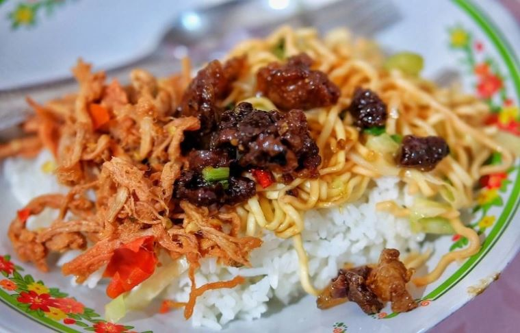

Nama dari nasi ini memang cukup unik, nasi angin. Kuliner nasi angin ini bisa Anda temukan dengan begitu gampang ketika berkunjung ke Kabupaten Tabanan. Saat ini, kebanyakan nasi angin disertai dengan lauk daging babi yang diolah dengan bumbu manis mirip seperti dendeng. Sebagai pelengkap, Anda juga akan menjumpai nasi ini disertai dengan sayur kul, mi, serta kuah hangat yang dibungkus secara terpisah. 